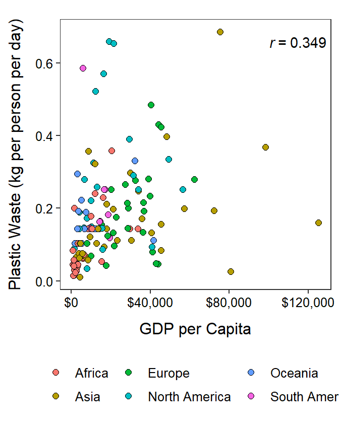
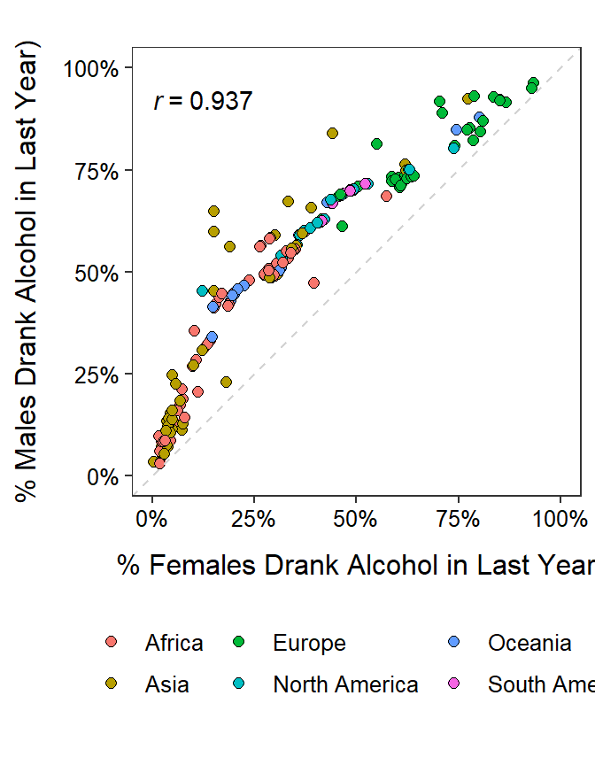
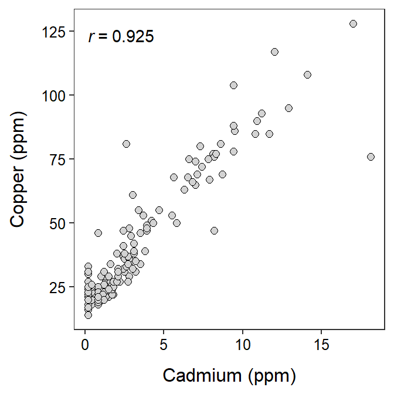
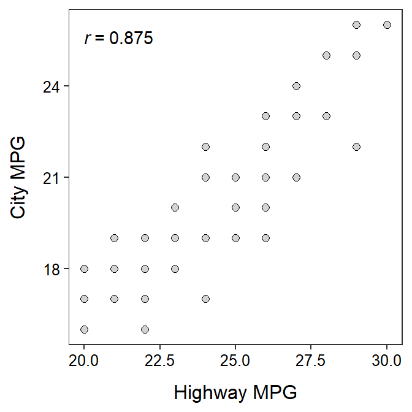

General Understandings
Associations II
For each situation below, identify (a) the response variable (if possible) and (b) whether you would expect a positive, negative, or no (neutral) association between the pair of variables. Explain your reasoning for both answers.
- Proportion of population with a post-secondary education and proportion of the population that have been incarcerated.
- Temperature and sales of ice cream.
- Hours spent exercising and percent body fat.
- Average annual amount of snowfall and proportion that support conceal-and-carry gun laws (recorded for states from across the U.S.)
- Husbands’ and wife’s ages.
- Golfers’ putting success and distance of the putt.
#Applications ## Plastic Waste and GDP  Use the figure below to perform a bivariate EDA between the per capita plastic waste generation rate (kg of plastic waste per person per day) and gross domestic product (GDP) per capita (in 2011 international dollars) measured for 148 countries in 2010.1
Use the figure below to perform a bivariate EDA between the per capita plastic waste generation rate (kg of plastic waste per person per day) and gross domestic product (GDP) per capita (in 2011 international dollars) measured for 148 countries in 2010.1

Rates of Drinking Alcohol
 Use the figure below to perform a bivariate EDA between the percents of men and women who drank alcohol in the last year as recorded for 148 countries in 2010.2
Use the figure below to perform a bivariate EDA between the percents of men and women who drank alcohol in the last year as recorded for 148 countries in 2010.2

Metals in Topsoil
 The concentration of cadmium and copper in the topsoil of 115 15mX15m plots along the river Meuse in the village Stein in New Zealand was recorded by van Rijn and Rikken. Use the scatterplot below to describe the bivariate relationship between these two variables.
The concentration of cadmium and copper in the topsoil of 115 15mX15m plots along the river Meuse in the village Stein in New Zealand was recorded by van Rijn and Rikken. Use the scatterplot below to describe the bivariate relationship between these two variables.

Highway and City MPG
Researchers at Chevrolet attempted to determine the relationship between gas mileage (MPG) of Luminas in the city (CITY) and on the highway (HIGHWAY). Their results are shown below. Use this information to write a brief description of this bivariate relationship.
